VI Accumulators
When you ask ISL+ to apply some function f to an argument a, you usually get some value v. If you evaluate (f a) again, you get v again.The function application may also loop forever or signal an error, but let’s ignore these possibilities for now. We also ignore random, which is the only real exception to this rule. As a matter of fact, you get the same result no matter how often you request the evaluation of (f a). Whether the function is applied for the first time or the hundredth time, whether the application is located in DrRacket’s interactions area or inside the function itself, doesn’t matter. The function works according to its purpose statement, and that’s all you need to know.
This principle of context-independence plays a critical role in the design
of recursive functions. When it comes to coding, you are free to assume
that the function computes what the purpose statement promises—
Although context-independence facilitates the design of functions, it also causes two problems. The general idea is that context-independence induces a loss of knowledge during a recursive evaluation; a function does not “know” whether it is called on a complete list or on a piece of that list. For structurally recursive programs this loss of knowledge means that they may have to traverse data more than once, inducing a grave performance cost. For functions that employ generative recursion, the loss means that the function may not be able to compute the result; instead the function loops forever for certain inputs. The preceding part illustrates this second problem with a graph traversal function that cannot find a path between two nodes for a circular graph.
This part introduces a variant of the design recipes to address this “loss of context” problem. Since we wish to retain the principle that (f a) returns the same result no matter how often it is evaluated, our only solution is to add an argument that represents the context of the function call. We call this additional argument an accumulator. During the traversal of data, the recursive calls continue to receive new regular arguments while accumulators change in relation to the other arguments and the context of the call.
Designing functions with accumulators correctly is clearly more complex than any of the design approaches from the preceding chapters. The key is to understand the relationship between the proper arguments and the accumulators. The following chapters explain how to design functions with accumulators and how they work.
36 The Loss of Knowledge
Both functions designed according to structural recipes and the generative
one suffer from the loss of knowledge, though in different ways. This
chapter explains with two examples—
36.1 A Problem with Structural Processing
Let’s start with a seemingly straightforward example:
Sample Problem: You are working for a geometer team that will measure the length of roads segments. The team asked you to design a program that translates these relative distances between a series of road points into absolute distances for some starting point.
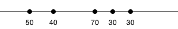
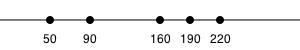
Designing a program that performs this calculation is at this point an
exercise in structural function design. Figure 103
contains the complete program. When the given list is not '(),
the natural recursion computes the absolute distance of the remainder of
the dots to the first item on (rest alon). Because the first item
is not the actual origin and has a distance of (first alon) to the
origin, we must add (first alon) to each number on the result of
the natural recursion. This second step—
; [List-of Number] -> [List-of Number] ; convert a list of relative distances to a list of absolute distances ; the first item on the list represents the distance to the origin (check-expect (relative->absolute '(50 40 70 30 30)) '(50 90 160 190 220)) (define (relative->absolute l) (cond [(empty? l) '()] [else (local ((define rest-of-l (relative->absolute (rest l))) (define adjusted (add-to-each (first l) rest-of-l))) (cons (first l) adjusted))])) ; Number [List-of Number] -> [List-of Number] ; add n to each number on alon (check-expect (cons 50 (add-to-each 50 '(40 110 140 170))) '(50 90 160 190 220)) (define (add-to-each n alon) (cond [(empty? alon) '()] [else (cons (+ (first alon) n) (add-to-each n (rest alon)))])) Figure 103: Converting relative distances to absolute distances
size
1000
2000
3000
4000
5000
6000
7000
time
25
109
234
429
689
978
1365
Exercise 402. Determine the abstract running time of relative->absolute.
Hint Evaluate the expressionby hand. Start by replacing size with 1, 2, and 3. How many natural recursions of relative->absolute and add-to-each are required each time?
Considering the simplicity of the problem, the amount of “work” that the program performs is surprising. If we were to convert the same list by hand, we would tally up the total distance and just add it to the relative distances as we take another step along the line. Why can’t a program use this idea?
(define (relative->absolute/a alon) (cond [(empty? alon) ...] [else ... (first alon) ... (relative->absolute/a (rest alon)) ...]))
= (cons ... 3 ... (convert (list 2 7))) = (cons ... 3 ... (cons ... 2 ... (convert (list 7)))) = (cons ... 3 ... (cons ... 2 ... (cons ... 7 ... (convert '()))))
Put differently, the problem is that recursive functions are independent of their context. A function processes L in (cons N L) in the same manner as in (cons K L). Indeed, it would also process L in that manner if it were given L by itself.
To make up for the loss of “knowledge,” we equip the function with an additional parameter: accu-dist. The new parameter represents the accumulated distance, which is the tally that we keep when we convert a list of relative distances to a list of absolute distances. Its initial value must be 0. As the function processes the numbers on the list, it must add them to the tally.
(define (relative->absolute/a alon accu-dist) (cond [(empty? alon) '()] [else (local ((define tally (+ (first alon) accu-dist))) (cons tally (relative->absolute/a (rest alon) tally)))]))
= (relative->absolute/a (list 3 2 7) 0) = (cons 3 (relative->absolute/a (list 2 7) 3)) = (cons 3 (cons 5 (relative->absolute/a (list 7) 5))) = (cons 3 (cons 5 (cons 12 (relative->absolute/a '() 12)))) = (cons 3 (cons 5 (cons 12 '())))
One minor problem with the new definition is that unlike relative->absolute, the new function consumes two arguments not just one. Worse, someone might accidentally misuse relative->absolute/a by applying it to a list of numbers and a number that isn’t 0. We can solve both problems with a function definition that uses a local definition to encapsulate relative->absolute/a; figure 104 shows the result. Now, relative->absolute and relative->absolute.v2 are indistinguishable with respect to the input-output relationship.
; [List-of Number] -> [List-of Number] ; convert a list of relative distances to a list of absolute distances ; the first item on the list represents the distance to the origin (check-expect (relative->absolute.v2 '(50 40 70 30 30)) '(50 90 160 190 220)) (define (relative->absolute.v2 alon0) (local (; [List-of Number] Number -> [List-of Number] (define (relative->absolute/a alon accu-dist) (cond [(empty? alon) '()] [else (local ((define accu (+ (first alon) accu-dist))) (cons accu (relative->absolute/a (rest alon) accu)))]))) (relative->absolute/a alon0 0))) Figure 104: Converting relative distances with an accumulator
size
1000
2000
3000
4000
5000
6000
7000
time
0
0
0
0
0
1
1
Exercise 403. With a bit of design and a bit of tinkering a friend of yours came up with the following solution for the sample problem:Messrs. Adrian German and Mardin Yadegar suggested this exercise.
; [List-of Number] -> [List-of Number] ; convert a list of relative distances to a list of absolute distances ; the first item on the list represents the distance to the origin (check-expect (relative->absolute '(50 40 70 30 30)) '(50 90 160 190 220)) (define (relative->absolute l) (reverse (foldr (lambda (f l) (cons (+ f (first l)) l)) (list (first l)) (reverse (rest l))))) This simple solution merely uses well-known ISL+ functions: reverse and foldr. Using lambda, as you know, is just a convenience. You may also recall from Abstraction that foldr is designable with the design recipes presented in the first two parts of the book.Does your friend’s solution mean there is no need for our complicated design in this motivational section? xFor a solution, see Recognizing the Need for an Accumulator, but do reflect on the question first and better still try to design reverse on your own.
36.2 A Problem with Generative Recursion
Sample Problem: Design an algorithm that checks whether two nodes are connected in a simple graph. In a simple graph, each node has exactly one, one-directional connection to another node, possibly itself.
Consider the sample graph in figure 105. There are six nodes: A through F, and six connections. To get from A to E, you must go through B and C. It is impossible, though, to reach F from A or from any other node besides F itself.
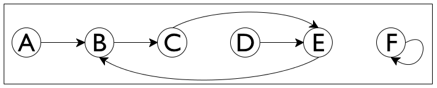
(define a-simple-graph '((A B) (B C) (C E) (D E) (E B) (F F)))
; Node Node SimpleGraph -> Boolean ; is there a path from origination to destination in sg (check-expect (path-exists? 'A 'E a-simple-graph) #true) (check-expect (path-exists? 'A 'F a-simple-graph) #false) (define (path-exists? origination destination sg) #false)
The problem is trivial if the nodes origination and destination are the same.
The trivial solution is #true.
If origination is not the same as destination, there is only one thing we can do: step to the immediate neighbor and search for destination from there.
There is no need to do anything if we find the solution to the new problem. If origination’s neighbor is connected to destination, then so is origination. Otherwise there is no connection.
; Node Node SimpleGraph -> Boolean ; is there a path from origination to destination in sg (check-expect (path-exists? 'A 'E a-simple-graph) #true) (check-expect (path-exists? 'A 'F a-simple-graph) #false) (define (path-exists? origination destination sg) (cond [(symbol=? origination destination) #t] [else (path-exists? (neighbor origination sg) destination sg)])) ; Node SimpleGraph -> Node ; determine the node that is connected to a-node in sg (check-expect (neighbor 'A a-simple-graph) 'B) (check-error (neighbor 'G a-simple-graph) "neighbor: not a node") (define (neighbor a-node sg) (cond [(empty? sg) (error "neighbor: not a node")] [else (if (symbol=? (first (first sg)) a-node) (second (first sg)) (neighbor a-node (rest sg)))]))
Figure 106 contains the complete program, including the
function for looking up the neighbor of a node in a simple graph—
(path-exists? 'C 'D '((A B) (B C) (C E) (D E) (E B) (F F)))
= (path-exists? 'E 'D '((A B) (B C) (C E) (D E) (E B) (F F))) = (path-exists? 'B 'D '((A B) (B C) (C E) (D E) (E B) (F F))) = (path-exists? 'C 'D '((A B) (B C) (C E) (D E) (E B) (F F)))
Our problem with path-exists? is again a loss of “knowledge,” similar to that of relative->absolute in the preceding section. Like relative->absolute, the design of path-exists? uses a recipe and assumes context-independence for recursive calls. In the case of path-exists? this means, in particular, that the function doesn’t “know” whether a previous application in the current chain of recursions received the exact same arguments.
The solution to this design problem follows the pattern of the preceding section. We add a parameter, which we call seen and which represents the accumulated list of origination nodes that the function has encountered, starting with the original application. Its initial value must be '(). As the function checks on a specific origination and moves to its neighbors, origination is added to seen.
; Node Node SimpleGraph [List-of Node] -> Boolean ; is there a path from origination to destination in sg ; assume the nodes in seen are known not to solve the problem (define (path-exists?/a origination destination sg seen) (cond [(symbol=? origination destination) #t] [else (path-exists?/a (neighbor origination sg) destination sg (cons origination seen))]))
(path-exists?/a 'C 'D '((A B) (B C) (C E) (D E) (E B) (F F)) '())
= (path-exists?/a 'E 'D '((A B) (B C) (C E) (D E) (E B) (F F)) '(C)) = (path-exists?/a 'B 'D '((A B) (B C) (C E) (D E) (E B) (F F)) '(E C)) = (path-exists?/a 'C 'D '((A B) (B C) (C E) (D E) (E B) (F F)) '(B E C))
All we need to do now, is to make the algorithm exploit the accumulated knowledge. Specifically, the algorithm can determine whether the given origination is already an item in seen. If so, the problem is also trivially solvable yielding #false as the solution. Figure 107 contains the definition of path-exists.v2?, which is the revision of path-exists?. The definition refers to member?, an ISL+ function.
; Node Node SimpleGraph -> Boolean ; is there a path from origination to destination in sg (check-expect (path-exists.v2? 'A 'E a-simple-graph) #true) (check-expect (path-exists.v2? 'A 'F a-simple-graph) #false) (define (path-exists.v2? origination destination sg) (local (; Node Node SimpleGraph [List-of Node] -> Boolean (define (path-exists?/a origination seen) (cond [(symbol=? origination destination) #t] [(member? origination seen) #f] [else (path-exists?/a (neighbor origination sg) (cons origination seen))]))) (path-exists?/a origination '()))) Figure 107: Finding a path in a simple graph with an accumulator
The definition of path-exists.v2? also eliminates the two minor problems with the first revision. By localizing the definition of the accumulating function, we can ensure that the first call always uses '() as the initial value for seen. And, path-exists.v2? satisfies the exact same contract and purpose statement as the path-exists? function.
Still, there is a significant difference between path-exists.v2? and relative-to-absolute2. Whereas the latter was equivalent to the original function, path-exists.v2? improves on path-exists?. While the latter fails to find an answer for some inputs, path-exists.v2? finds a solution for any simple graph.
Exercise 404. Modify the definitions of find-path and find-path/list in figure 97 so that they produce #false, even if they encounter the same starting point twice.
37 Designing Accumulator-Style Functions
The preceding chapter illustrates the need for accumulating extra knowledge with two examples. In one case, accumulation makes it easy to understand the function and yields one that is far faster than the original version. In the other case, accumulation is necessary for the function to work properly. In both cases though, the need for accumulation becomes only apparent once a properly designed function exists.
the recognition that a function benefits from an accumulator;
an understanding of what the accumulator represents with respect to the design.
37.1 Recognizing the Need for an Accumulator
If a structurally recursive function processes the result of its natural recursion with an auxiliary, recursive function, consider the use of an accumulator parameter.
Take a look at the definition of invert:; [List-of X] -> [List-of X] ; construct the reverse of alox (check-expect (invert '(a b c)) '(c b a)) (define (invert alox) (cond [(empty? alox) '()] [else (add-as-last (first alox) (invert (rest alox)))])) ; X [List-of X] -> [List-of X] ; add an-x to the end of alox (check-expect (add-as-last 'a '(c b)) '(c b a)) (define (add-as-last an-x alox) (cond [(empty? alox) (list an-x)] [else (cons (first alox) (add-as-last an-x (rest alox)))])) The result of the recursive application produces the reverse of the rest of the list. It is processed by add-as-last, which adds the first item to the reverse of the rest and thus creates the reverse of the entire list. This second, auxiliary function is also recursive. We have thus identified a potential candidate.It is now time to study some hand-evaluations, as we did in A Problem with Structural Processing, to see whether an accumulator helps. Consider the following expression:(invert '(a b c))
Here is how you calculate how invert determines the result when given '(a b c):= (add-as-last 'a (invert '(b c))) = (add-as-last 'a (add-as-last 'b (invert '(c)))) = (add-as-last 'a (add-as-last 'b (add-as-last 'c (invert '())))) = (add-as-last 'a (add-as-last 'b (add-as-last 'c '()))) = (add-as-last 'a (add-as-last 'b '(c))) = (add-as-last 'a '(c b)) = '(c b a) Eventually invert reaches the end of the given list—just like add-as-last— and if it knew which items to put there, there would be no need for the auxiliary function. If we are dealing with a function based on generative recursion, we are faced with a much more difficult task. Our goal must be to understand whether the algorithm can fail to produce a result for inputs for which we expect a result. If so, adding a parameter that accumulates knowledge may help. Because these situations are complex, we defer the discussion of an example to More Uses of Accumulation.
Exercise 405. Does the insertion sort> function from Recursive Auxiliary Functions need an accumulator? If so, why? If not, why not?
37.2 Adding Accumulators
Determine the knowledge that the accumulator represents, what kind of data to use, and how the knowledge is acquired as data.
For example, for the conversion of relative distances to absolute distances, it suffices to accumulate the total distance encountered so far. As the function processes the list of relative distances, it adds each new relative distance found to the accumulator’s current value. For the routing problem, the accumulator remembers every node encountered. As the path-checking function traverses the graph, it conses each new node on to the accumulator.
In general, you want to proceed as follows.- Create an accumulator template:
; Domain -> Range (define (function d0) (local (; Domain AccumulatorDomain -> Range ; accumulator ... (define (function/a d a) ...)) (function/a d0 a0))) Sketch a manual evaluation of an application of function to understand the nature of the accumulator. Determine the kind of data that the accumulator tracks.
Write down a statement that explains the accumulator as a relationship between the argument d of the auxiliary function/a and the original argument d0.
Note The relationship remains constant—
also called invariant— over the course of the evaluation. Because of this property, an accumulator statement is also called an accumulator invariant. Use the accumulator statement to determine the initial value a0 for a.
Also exploit the accumulator statement to determine how to compute the accumulator for the recursive function calls within the definition of function/a.
Exploit the accumulator’s knowledge for the design of the auxiliary function.
For a structurally recursive function, the accumulator’s value is typically used in the base case, that is, the cond clause that does not recur. For functions that use generative recursive functions, the accumulated knowledge might be used in an existing base case, in a new base case, or in the cond clauses that deal with generative recursion.
; [List-of X] -> [List-of X] ; construct the reverse of alox0 (check-expect (invert.v2 '(a b c)) '(c b a)) (define (invert.v2 alox0) (local (; [List-of X] ??? -> [List-of X] ; construct the reverse of alox ; accumulator ... (define (invert/a alox a) (cond [(empty? alox) ...] [else (invert/a (rest alox) ... a ...)]))) (invert/a alox0 ...)))
(invert '(a b c))
= (invert/a '(a b c) a0) = (invert/a '(b c) ... 'a ... a0) = (invert/a '(c) ... 'b ... 'a ... a0) = (invert/a '() ... 'c ... 'b ... 'a ... a0)
(define (invert.v2 alox0) (local (; [List-of X] [List-of X] -> [List-of X] ; construct the reverse of alox ; accumulator a is the list of all those items ; on alox0 that precede alox in reverse order (define (invert/a alox a) (cond [(empty? alox) a] [else (invert/a (rest alox) (cons (first alox) a))]))) (invert/a alox0 '())))
Note how once again invert.v2 traverses the list just. In contrast, invert re-processes every result of its natural recursion with add-as-last. Stop! Measure how much faster invert.v2 runs than invert on the same list.
Terminology Programmers use the phrase accumulator-style function when they discuss functions that use an accumulator parameter. Examples of functions in accumulator-style are relative->absolute/a, path-exists?/a, and invert/a.
37.3 Transforming Functions into Accumulator-Style
Articulating the accumulator statement is difficult but without formulating a good invariant, it is impossible to understand an accumulator-style function. Since the goal of a programmer is to make sure that others who follow understand the code easily, practicing this skill is critical. And formulating invariants is deserves a lot of practice.
The goal of this section is to study the formulation of accumulator statements with three case studies: a summation function, the factorial function, and a tree-traversal function. Each such case is about the conversion of a structurally recursive function into accumulator style. None actually call for the use of an accumulator parameter. But they are easily understood and, with the elimination of all other distractions, using such examples allows us to focus on the articulation of the accumulator invariant.
; [List-of Number] -> Number ; compute the sum of the numbers on alon (check-expect (sum '(10 4 6)) 20) (define (sum alon) (cond [(empty? alon) 0] [else (+ (first alon) (sum (rest alon)))]))
; [List-of Number] -> Number ; compute the sum of the numbers on alon0 (check-expect (sum.v2 '(10 4 6)) 20) (define (sum.v2 alon0) (local (; [List-of Number] ??? -> Number ; compute the sum of the numbers on alon ; accumulator ... (define (sum/a alon a) (cond [(empty? alon) ...] [else (... (sum/a (rest alon) ... a ...) ...)]))) (sum/a alon0 ...)))
(sum '(10 4)) = | (sum.v2 '(10 4)) = | ||||||||||
|
|
a represents the sum of the numbers that alon lacks in comparison to alon0
(define (sum.v2 alon0) (local (; [List-of Number] ??? -> Number ; compute the sum of the numbers on alon ; accumulator a represents the sum of the numbers ; that alon lacks in comparison to alon0 (define (sum/a alon a) (cond [(empty? alon) a] [else (sum/a (rest alon) (+ (first alon) a))]))) (sum/a alon0 0)))
Exercise 406. Explain why the natural recursion maintains the correctness of the accumulator statement:Study the above examples before you formulate a general argument.
(sum/a '(10 4 6))
Doing so shows that the sum and sum.v2 add up the given numbers in reverse order. While sum adds up the numbers from right to left, the accumulator-style version adds them up from left to right.
> (g-series 5)
(list
#i-0.9509900498999999
#i0.96059601
#i-0.970299
#i0.9801
#i-0.99)
> (sum (g-series 1000.0)) #i-0.49746596003269394
> (sum.v2 (g-series 1000.0)) #i-0.49746596003269533
; N -> N ; compute (* n (- n 1) (- n 2) ... 1) (check-expect (! 3) 6) (define (! n) (cond [(zero? n) 1] [else (* n (! (sub1 n)))]))
; N -> N ; compute (* n0 (- n0 1) (- n0 2) ... 1) (check-expect (!.v2 3) 6) (define (!.v2 n0) (local (; N ??? -> N ; compute (* n (- n 1) (- n 2) ... 1) ; accumulator ... (define (!/a n a) (cond [(zero? n) ...] [else (... (!/a (sub1 n) ... a ...) ...)]))) (!/a n0 ...)))
(! 3) = | (!.v2 3) = | ||||||||||||
|
|
a is the product of the natural numbers in the interval [n0,n).
Exercise 408. What should the value of a be when n0 is 3 and n is 1? How about when n0 is 10 and n is 8?
(define (!.v2 n0) (local (; N N -> N ; compute (* n (- n 1) (- n 2) ... 1) ; accumulator a is the product of the natural ; numbers in the interval [n0,n). (define (!/a n a) (cond [(zero? n) a] [else (!/a (sub1 n) (* n a))]))) (!/a n0 1)))
Exercise 409. Like sum, ! performs the primitive computation steps—
multiplication in this case— in reverse order. Surprisingly, this affects the performance of the function in a negative manner. Measure how long it takes to evaluate (! 20) one thousand times. Recall that (time an-expression) function determines how long it takes to run an-expression.
For the third and last example, we use a function that measures the height of simplified binary trees. The example illustrates that accumulator-style programming applies to all kinds of data, not just those defined with single self-references. Indeed, it is as common for complicated data definitions as it is for lists and natural numbers.
(define-struct node (left right)) ; A BinaryTree (short Tree) is one of: ; – '() ; – (make-node Tree Tree) (define example (make-node (make-node '() (make-node '() '())) '()))
; Tree -> N ; measure the height of abt0 (check-expect (height example) 3) (define (height abt) (cond [(empty? abt) 0] [else (+ (max (height (node-left abt)) (height (node-right abt))) 1)]))
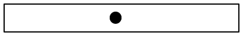
'()
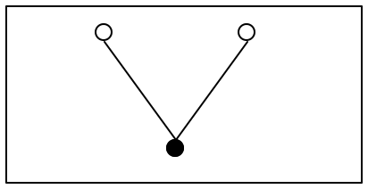
(make-node '() '())
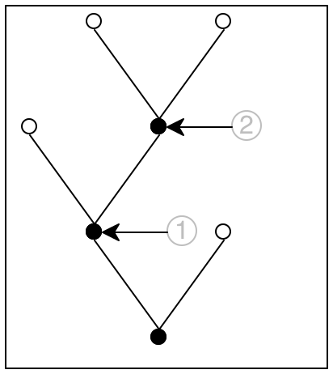
(make-node (make-node '() (make-node '() '())) '())
; Tree -> N ; measure the height of abt0 (check-expect (height.v2 example) 3) (define (height.v2 abt0) (local (; Tree ??? -> N ; measure the height of abt ; accumulator ... (define (height/a abt a) (cond [(empty? abt) ...] [else (... (height/a (node-left abt) ... a ...) ... ... (height/a (node-right abt) ... a ...) ...)]))) (height/a abt0 ...)))
a is the number of steps it takes to reach abt from abt0.
If abt0 is the complete tree and abt is the subtree pointed to by the circled 1, the accumulator’s value must be 1 because it takes exactly one step to get from the root of abt to the root of abt0.
In the same spirit, for the subtree labeled 2 the accumulator is 2 because it takes two steps to get this place.
(define (height.v2 abt0) (local (; Tree N -> N ; measure the height of abt ; accumulator a is the number of steps ; it takes to reach abt from abt0 (define (height/a abt a) (cond [(empty? abt) a] [else (... (height/a (node-left abt) (+ a 1)) ... ... (height/a (node-right abt) (+ a 1)) ...)]))) (height/a abt0 0)))
Following the design recipe also tells us that we need to interpret the two values to find the appropriate function. According to the purpose statement for height/a, the first value is the height of the left subtree, and the second one is the height of the right one. Given that we are interested in the height of abt itself and that the height is the largest number of steps it takes to reach a leaf, we use the max function to pick the proper one; see figure 109 for the complete definition.
; Tree -> N ; measure the height of abt0 (check-expect (height.v2 example) 3) (define (height.v2 abt0) (local (; Tree N -> N ; measure the height of abt ; accumulator a is the number of steps ; it takes to reach abt from abt0 (define (height/a abt a) (cond [(empty? abt) a] [else (max (height/a (node-left abt) (+ a 1)) (height/a (node-right abt) (+ a 1)))]))) (height/a abt0 0)))
the first accumulator, a, represents the number of steps it takes to reach abt from abt0 and the second accumulator, stands for the tallest branch in the part of abt0 that is to the left of abt.
(define (height.v3 abt0) (local (; Tree N N -> N ; measure the height of abt ; accumulator s is the number of steps ; it takes to reach abt from abt0 ; accumulator m is the maximal height of ; the part of abt0 that is to the left of abt (define (h/a abt s m) (cond [(empty? abt) ...] [else (... (h/a (node-left abt) ... s ... ... m ...) ... ... (h/a (node-right abt) ... s ... ... m ...) ...)]))) (h/a abt0 ...)))
Exercise 410. Complete the design of height.v3.
Hint In terms of the bottom-most tree of figure 108, the place marked 1 has no complete paths to leafs to its left while the place marked 2 has one complete path and it consists of two steps.
This second design has a more complex accumulator invariant than the first one. By implication, its implementation requires more care than the first one. At the same time, it comes without any advantages, meaning it is inferior to the first one.
Our point is that different accumulator invariants yield different variants. You can design both variants systematically following the same design recipe. When you have complete function definitions, you can compare and contrast the results, and you can then decide which one to keep based on evidence. End
Exercise 411. Design an accumulator-style version of product, the function that computes the product of a list of numbers. Stop when you have formulated the accumulator invariant and have someone check it.
Exercise 412. Design an accumulator-style version of how-many, which is the function that determines the number of items on a list. Stop when you have formulated the accumulator invariant and have someone check it.
Exercise 413. Design an accumulator-style version of add-to-pi, which adds a natural number to pi without using +:
; N -> Number ; add n to pi without use + (check-within (add-to-pi 2) (+ 2 pi) 0.001) (define (add-to-pi n) (cond [(zero? n) pi] [else (add1 (add-to-pi (sub1 n)))])) Stop when you have formulated the accumulator invariant and have someone check it.
Exercise 414. Design the function make-palindrome, which accepts a non-empty list and constructs a palindrome by mirroring the list around the last item. When given (explode "abc"), it yields (explode "abcba").
Hint Here is a solution designed by function composition:
; [cons 1String [List-of 1String]] -> [cons 1String [List-of 1String]] ; create a palindrome by mirroring the given list around the last item (check-expect (mirror (explode "abc")) (explode "abcba")) (define (mirror s0) (append (all-but-last s0) (list (last s0)) (reverse (all-but-last s0)))) See Generalizing Functions for last; design all-but-last in an analogous manner. This solution traverses s0 four times:
via all-but-last,
via last,
via all-but-last again, and
via reverse, which is ISL+’s version of inverse.
Even with local definition for the result of all-but-last, the function needs three traversals. While these traversals aren’t “stacked” and therefore don’t have a disastrous impact on the function’s performance, an accumulator version can compute the same result with a single traversal.
Exercise 415. Exercise 384 implicitly asks for the design of a function that rotates a Matrix until the first coefficient of the first row differs from 0. In the context of Exercise 384, the solution calls for a generative recursive function that creates a new matrix by shifting the first row to the end when it encounters a 0 in the first position. Here is the solution:
; Matrix -> Matrix ; find the first row that doesn't start with 0 and use it as the first one ; generative move the first row to last place ; termination this function does not terminate if all rows in M start with 0 (check-expect (rotate-until.v2 '((0 4 5) (1 2 3))) '((1 2 3) (0 4 5))) (define (rotate M) (cond [(not (= (first (first M)) 0)) M] [else (rotate (append (rest M) (list (first M))))])) Stop! Modify this function so that it signals an error when all rows start with 0.If you measure this function on large instances of Matrix, you get a surprising result:
rows in M
1000
2000
3000
4000
5000
17
66
151
272
436
As the number of rows increases from 1,000 to 5,000, the time spent by rotate does not increase by a factor of five but by twenty.The problem is that rotate uses append, which makes a brand-new list like (rest M) only to add (first M) at the end. If M consists of 1,000 rows and the last row is the only one with a non-0 coefficient, that’s roughly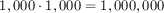
lists. How many lists do we get if M consists of 5,000 lines?Now suppose we conjecture that the accumulator-style version is faster than the generative one. Here is the accumulator template assuming rotate is a structurally recursive function:
; Matrix -> Matrix ; find the first row that doesn't start with 0 and use it as the first one (define (rotate.v2 M0) (local (; Matrix ... -> Matrix ; accumulator ... (define (rotate/a M seen) (cond [(empty? M) ...] [else (... (rotate/a (rest M) ... seen ...) ...)]))) (rotate M0 ...))) The goal is to remember the first row when its leading coefficient is 0 without using append for every recursion.Formulate an accumulator statement. Then follow the accumulator design recipe to complete the above function. Measure how fast it runs on a Matrix that consists of rows with leading 0s except for the last one. If you completed the design correctly, the function is quite fast.
Exercise 416. Design to10. It consumes a list of digits and produces the corresponding number. The first item on the list is the most significant digit. Hence, when applied to '(1 0 2), it produces 102.
Domain Knowledge You may recall from grade school that the result is determined by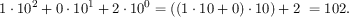
Exercise 417. Design the function is-prime, which consumes a natural number and returns #true if it is prime and #false otherwise.
Domain Knowledge A number n is prime if it is not divisible by any number between n - 1 and 2.
Hint The design recipe for N [>=1] suggests the following template:
Note on Speed People who encounter accumulator-style programming for the first time often get the impression that they are always faster than their recursive counterparts. Both parts are plain wrong. While it is impossible to explain this mistake in reasoning in this book, let us take a look at the solution of exercise 409:
!
5.760
5.780
5.800
5.820
5.870
5.806
!.v2
5.970
5.940
5.980
5.970
6.690
6.111
The table represents the timings for the two factorial functions. Specifically, the top row shows the number of seconds for 1,000 evaluations of (! 20) where the last cell shows the average. The bottom row shows the result of an analogous experiment with !.v2. Bottom line is the performance of the accumulator-style version of factorial is always worse than that of the original factorial function.
37.4 A Graphical Editor, with Mouse
A Graphical Editor introduces the notion of an one-liner editor and presents a number of exercises on creating a graphical editor. An graphical editor is an interactive program that interprets key events as editing actions on a string. In particular, when a user presses the left or right arrow key, the cursor moves left or right; similarly, pressing the delete key removes a 1String from the edited text. The editor program uses a data representation that combines two strings in a structure. A Graphical Editor, Revisited resumes these exercises and shows how the same program can greatly benefit from a different data structure, one that combines two strings.
Neither of these sections deals with mouse actions for navigation, even though all modern applications support this functionality. The basic difficulty with mouse events is to place the cursor at the appropriate spot. Since the program deals with a single line of text, a mouse click at (x,y) clearly aims to place the cursor between the letters that are visible at or around the x position. This section fills the gap.
Recall the relevant definitions from A Graphical Editor, Revisited:
(define FONT-SIZE 11) (define FONT-COLOR "black") ; [List-of 1String] -> Image ; render a string as an image for the editor (define (editor-text s) (text (implode s) FONT-SIZE FONT-COLOR)) (define-struct editor [pre post]) ; An Editor is ; (make-editor [List-of 1String] [List-of 1String]) ; interpretation if (make-editor p s) is the state of an ; interactive editor, (reverse p) corresponds to the text to the ; left of the cursor and s to the one on its right
Exercise 418. Use the structural design recipe to develop split-structural. The function consumes a list of 1Strings e and a natural number x; the former represents the complete string in some Editor and the latter the x coordinate of the mouse click. It produces(make-editor p s)
such that (1) p and s make up e and (2) x is larger than the image of p and smaller than the image of p extended with the first 1String on s (if any).Here is the first condition expressed with an ISL+ expression:(string=? (string-append p s) e)
The second one is
(<= (image-width (editor-text p)) x (image-width (editor-text (append p (first s))))) Hints (1) The x coordinate measures the distance from the left. Hence the function must check whether smaller and smaller prefixes of e fit into the given width. The first one that doesn’t corresponds to the pre field of the desired Editor, the remainder of e to the post field.
(2) Designing this function calls for thoroughly developing examples and tests. See Intervals, Enumerations, Itemizations.
Exercise 419. Design the function split. Use the accumulator design recipe to improve on the result of exercise 418. After all, the hints already point out that when the function discovers the correct split point, it needs both parts of the list and one part is obviously lost due to recursion.
Once you have solved this exercise, equip the main function of
A Graphical Editor, Revisited with a clause for mouse
clicks. As you experiment with moving the cursor via mouse clicks, you will
notice that it does not exactly behave like applications that you use on
your other devices—
Graphical programs, like editors, call for experimentation to come up with best “look and feel” experiences. In this case, your editor is too simplistic with its placement of the cursor. After the applications on your computer determine the split point, they also determine which letter division is closer to the x coordinate and place the cursor there.
38 More Uses of Accumulation
This chapter presents three more uses of accumulators. The first section concerns the use of accumulators in conjunction with tree-processing functions. It uses the compilation of ISL+ as an illustrative example. The second section explains why we occasionally want accumulators inside of data representations and how to go about it. The final section resumes the discussion of rendering fractals.
38.1 Accumulators and Trees
When you ask DrRacket to run an ISL+ program, it translates the program to commands for your specific computer. This process is called compilation and the part of DrRacket that performs the task is called a compiler. Before the compiler translates the ISL+ program, it checks that every variable is declared via a define, define-struct, or a lambda.
Stop! Enter x, (lambda (y) x), and (x 5) as completes ISL+ programs into DrRacket and ask it to run each. What do you expect to see?
Sample Problem: You have been hired to re-create a part of the ISL+ compiler. Specifically, your task deals with the following language fragment, specified in the so-called grammar notation that many programming language manuals use:We use the Greek letter λ instead of lambda to signal that this exercise deals with ISL+ as an object of study not just a programming language.
expression = variable | (λ (variable) expression) | (expression expression) Remember from BSL: Grammar that you can read the grammar aloud replacing = with “is one of” and | with “or.”Recall that λ expressions are functions without names. They bind their parameter in their body. Conversely, a variable occurrence is declared by a surrounding λ that specifies the same name as a parameter. You may wish to revisit Intermezzo: Scope because it deals with the same issue from the perspective of a programmer. Look for the terms “binding occurrence,” “bound occurrence,” and “free.”
Develop a data representation for the above language fragment; use symbols to represent variables. Then design a function that replaces all undeclared variables with '*undeclared.
(λ (x) x) is the function that returns whatever it is given, also known as the identity function;
(λ (x) y) looks like a function that returns y whenever it is given an argument, except that y isn’t declared;
(λ (y) (λ (x) y)) is a function that, when given some value v, produces a function that always returns v;
((λ (x) x) (λ (x) x)) applies the identity function to itself;
(((λ (y) (λ (x) y)) (λ (z) z)) (λ (w) w)) is complex expression that is best run in ISL+ to find out whether it even terminates.
Exercise 420. Explain the scope of each binding occurrence in the above examples. Draw arrows from all bound occurrences to the binding occurrences.
(define ex1 '(λ (x) x)) (define ex2 '(λ (x) y)) (define ex3 '(λ (y) (λ (x) y))) (define ex4 '((λ (x) (x x)) (λ (x) (x x))))
Exercise 421. Define the functions is-var?, is-λ?, and is-app?, predicates that distinguish (representations of) variables from λ expressions and applications.
Also define
λ-para, which extracts the parameter from a λ expression;
λ-body, which extracts the body from a λ expression;
app-fun, which extracts the function from an application; and
app-arg, which extracts the argument from an application.
With these, you basically can act as if you had used a structure-oriented data definition.Design declareds, which produces the list of all symbols used as λ parameters in a λ term. Don’t worry about duplicate symbols.
Exercise 422. Develop a data representation for the same subset of ISL+ that uses structures instead of lists. Also provide data representations for ex1, ex2, and ex3 following you data definition.
; Lam -> Lam ; replace all symbols s in le with '*undeclared if they do ; not occur within the body of a λ whose parameter is s (check-expect (undeclareds ex1) ex1) (check-expect (undeclareds ex2) '(λ (x) *undeclared)) (check-expect (undeclareds ex3) ex3) (check-expect (undeclareds ex4) ex4) (define (undeclareds le0) le0)
(define (undeclareds le) (cond [(is-var? le) ...] [(is-λ? le) (... (undeclareds (λ-body le)) ...)] [(is-app? le) (... (undeclareds (app-fun le)) (undeclareds (app-arg le)) ...)]))
(define (undeclareds le0) (local (; Lam ??? -> Lam ; accumulator a represents ... (define (undeclareds/a le a) (cond [(is-var? le) ...] [(is-λ? le) (... (undeclareds (λ-body le) ... a ...) ...)] [(is-app? le) (... (undeclareds (app-fun le) ... a ...) (undeclareds/a (app-arg le) ... a ...) ...)]))) (undeclareds/a le0 ...)))
a represents the list of λ parameters encountered on the path from le0 to le.
'(((λ (y) (λ (x) y)) (λ (z) z)) (λ (w) w))
'(((λ (y) (λ (x) y)) (λ (z) z)) (λ (w) w))
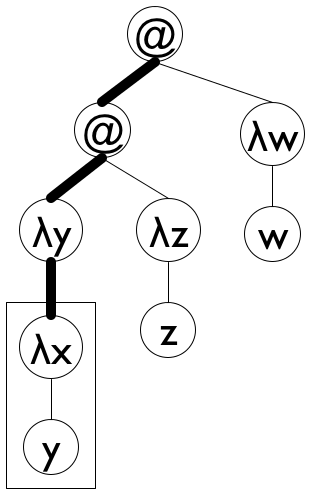 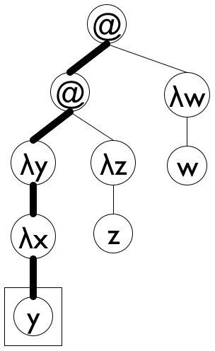
Figure 110: Lam terms as trees
the initial accumulator value of '();
we can use cons to add (λ-para le) to a; and
once undeclareds/a reaches a variable, it can use the accumulator to check whether the variable is in the scope of a declaration.
Figure 111 shows how to translate these ideas into a complete function definition. Note the name declareds for the accumulator; it brings across the key idea behind the accumulator invariant, helping the programmer understand the definition. The base case uses member? from ISL+ to determine whether the variable le is in declareds and, if not, replaces it with '*undeclared. The second cond clause uses a local to introduce the extended accumulator newd. Because para is also used to rebuild the expression, it has its own local definition. Finally, the last clause concerns function applications, which do not declare variables and do not use any directly. As a result, it is by far the simplest of the three clauses.
; Lam -> Lam ; replace all symbols s in le with '*undeclared if they do ; not occur within the body of a λ whose parameter is s (check-expect (undeclareds ex1) ex1) (check-expect (undeclareds ex2) '(λ (x) *undeclared)) (check-expect (undeclareds ex3) ex3) (check-expect (undeclareds ex4) ex4) (define (undeclareds le0) (local (; Lam [List-of Symbol] -> [List-of Symbol] ; accumulator declareds is a list of all λ ; parameters on the path from le0 to le (define (undeclareds/a le declareds) (cond [(is-var? le) (if (member? le declareds) le '*undeclared)] [(is-λ? le) (local ((define para (λ-para le)) (define newd (cons para declareds)) (define body (undeclareds/a (λ-body le) newd))) (list 'λ (list para) body))] [(is-app? le) (list (undeclareds/a (app-fun le) declareds) (undeclareds/a (app-arg le) declareds))]))) (undeclareds/a le0 '())))
Exercise 423. Make up an ISL+ expression in which x occurs both free and bound. Formulate it as an element of Lam. Does undeclareds work properly on your expression?
Yes, it uses *undeclared as a variable. Represent it in Lam and check what undeclareds produces for this expression.Modify undeclareds so that it replaces each free occurrence of 'x with(list '*undeclared 'x)
and each bound one y with(list '*declared 'y)
Doing so unambiguously identifies problem spots, which a program-development environment such as DrRacket can use to high-light errors.Note The trick to replace a variable occurrence with the representation of an application feels awkward. If you dislike it, consider synthesizing the symbols '*undeclared:x and 'declared:y instead.
Exercise 425. Re-design the undeclareds function for the structure-based data representation from exercise 422.
Exercise 426. Design the function static-distance. It replaces all occurrences of variables with a natural number that represents how far away the declaring λ is.
Figure 112 illustrates the idea. The tree on the left represents the Lam term'((λ (y) (λ (x) (y x))) (λ (z) z))
in graphical form. It includes dotted arrows that point from variable occurrences to the corresponding variable declarations. On the right, the figure shows a tree of the same shape, though without the arrows. The 'λ nodes come without names, and variable occurrences have been replaced by natural numbers that specify which 'λ declares the variable. Each natural number n says that the binding occurrence is n steps upwards—toward the root of the Lam tree. A value of 0 denotes the first 'λ on the path to the root, 1 the second one, and so on. Hint The undeclareds accumulator of undeclareds/a is a list of all parameters on path from le to le0 in reverse order—
the last one seen is at the first on the list.
38.2 Data Representations with Accumulators
When you play board games or solve puzzles, you tend to think about your possible moves at every stage. As you get better, you may even imagine the possibilities after this first step. The result is a so-called game tree, which is a (part of the) tree of all possible moves that the rules allow.
Sample Problem: Your manager tells you the following story.
“Once upon a time, three cannibals were guiding three missionaries through a jungle. They were on their way to the nearest mission station. After some time, they arrived at a wide river, filled with deadly snakes and fish. There was no way to cross the river without a boat. Fortunately, they found a row boat with two oars after a short search. Unfortunately, the boat was too small to carry all of them. It could barely carry two people at a time. Worse, because of the river’s width someone had to row the boat back.
“Since the missionaries could not trust the cannibals, they had to figure out a plan to get all six of them safely across the river. The problem was that these cannibals would kill and eat missionaries as soon as there were more cannibals than missionaries at some place. Thus our missionaries had to devise a plan that guaranteed that there were never any missionaries in the minority at either side of the river. The cannibals, however, could be trusted to cooperate otherwise. Specifically, they wouldn’t abandon any potential food, just as the missionaries wouldn’t abandon any potential converts.”
While your manager doesn’t assign any specific design task, he wants to explore whether the company can design (and sell) programs that solve such puzzles.
In principle, it is quite straightforward to solve such puzzles by hand. Here is the rough idea. Pick a graphical representation of the problem states. Ours consists of a three-part box: the left one represents the missionaries and the cannibals on the left; the middle combines the river and the boat; and the third part is the right-hand side of the river. Take a look at the following representation of the initial state:
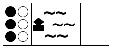
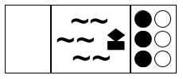 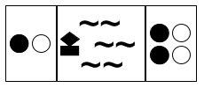
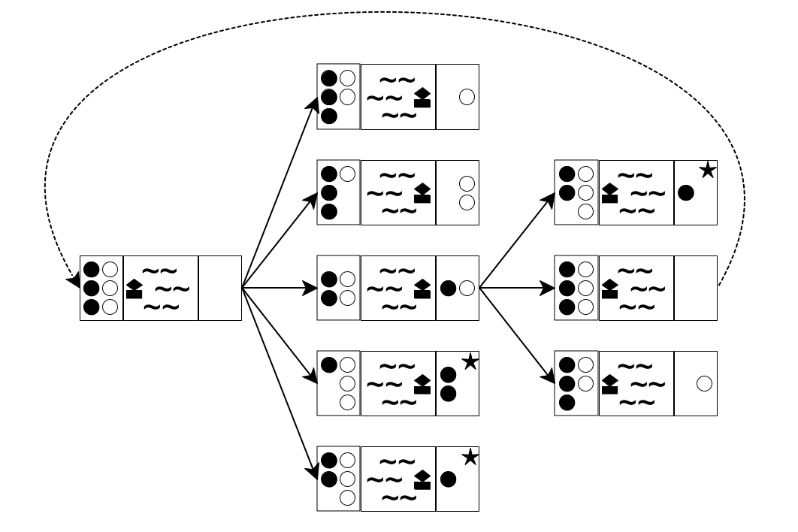
Now that you have a way to write down the state of the puzzle, you can think about the possibilities at each stage. Doing so yields a tree of possible moves. Figure 113 sketches the first two and a half layers in such a tree. The left-most state is the initial one. Because the boat can transport at most two people and must be rowed by at least one, you have five possibilities to explore: one cannibal rows across, two, one missionary and one cannibal go, one missionary, or two missionaries. These possibilities are represented with five arrows going from the initial state to five intermediate states.
For each of these five intermediate states, you can play the same game again. In figure 113 you see how the game continues for the middle (third) one of the new states. Because there are only two people on the right river bank, you see three possibilities: a cannibal goes back, a missionary, or both. Hence three arrows connect the middle state to the three states on the right side of the tree.
If you keep drawing the tree of possibilities—
A close look at figure 113 reveals two problems with this naive approach to generating the tree of possibilities. The first one is the dashed arrow that connects the middle state on the right to the initial state. It indicates that rowing back the two people from the right to the left gets the puzzle back to its initial state, meaning you’re starting over, which is obviously undesirable. The second problem concerns those states with a star in the top-right corner. In both cases, there are more white-circle cannibals than black-circle missionaries on the left river bank, meaning the cannibals would eat the missionaries. Again, the goal is to avoid such states, making these moves undesirable.
; PuzzleState -> PuzzleState ; determine whether the final state is reachable from the given state ; generative create search tree of possible boat rides ; termination ??? (check-expect (solve initial-puzzle) final-puzzle) (define (solve state0) (local (; [List-of PuzzleState] -> PuzzleState ; generative generate the successor states for all intermediate ones (define (solve* los) (cond [(ormap final? los) (first (filter final? los))] [else (solve* (create-next-states los))]))) (solve* (list state0))))
Clearly, solve is quite generic. As long as you define a collection of PuzzleStates, a function for recognizing final states, and a function for creating all “successor” states, solve can work on your puzzle.
Exercise 427. The solve* function generates all states reachable with n boat trips before it looks at states that require n + 1 boat trips, even if some of those boat trips return to previously encountered states. Because of this systematic way of traversing the tree, solve* cannot go into an infinite loop. Why?
Terminology This way of searching a tree or a graph is dubbed breadth-first search.
Exercise 428. Develop a data representation for the states of the missionary-and-cannibal puzzle. Like the graphical representation, a state must obviously record the number of missionaries and cannibals on each side of the river plus the location of the boat. After all, these are the properties of the world that change with one boat trip.
The description of PuzzleStates calls for a structure type definition. Represent the above initial, intermediate, and final states in your chosen data representation.
Design the function final?, which detects whether in a given state all people are on the right river bank.
Design the function render-mc, which maps a state of the missionary-and-cannibal puzzle to an image.
The problem is that returning the final state says nothing about how the player can get from the initial state to the final one. In other words, create-next-states forgets how it gets to the returned states from the given ones. And this situation clearly calls for an accumulator, but at the same time, the accumulated knowledge is best associated with the individual PuzzleStates not solve* or any other function.
Exercise 429. Modify the data representation from exercise 428 so that each state records the sequence of states traversed to get there. Use a list of states.
Articulate and write down an accumulator statement with the data definition that explains the additional field.
Do you have to modify final? or render-mc to work on this revised data representation?
Exercise 430. Design the create-next-states function. It consumes lists of missionary-and-cannibal states and generates the list of all those states that a boat ride can reach.
Ignore the accumulator in the first draft of create-next-states, but make sure that the function does not generate states where the cannibals can eat the missionaries.
For the second design, update the accumulator field in the state structures and use it to rule out states that have been encountered on the way to the current state.
Exercise 431. Exploit the accumulator-oriented data representation to modify solve. The revised function produces the list of states that lead from the initial puzzle state to the final one.
Also consider creating a movie from this list, using render-mc to generate the images. Use run-movie to display the movie.
38.3 Accumulators as Results
The given problem is a triangle. When the triangle is too small to be sub-divided any further, the algorithm does nothing; otherwise, it finds the midpoints of its three sides and deals with the three outer triangles recursively.
Sample Problem: Design the add-sierpinski function. It consumes an image and three Posns describing an triangle. It adds to this given image a Sierpinski triangle whose outer perimeter is the given triangle.
The given problem is trivial if the triangle is too small to be subdivided.
In the trivial case, the function returns the given image.
Otherwise the process adds the triangle and determines the midpoints of the given triangle’s sides. Each “outer” triangle is then processed recursively.
Each of these recursive steps produces an image. The remaining question is how to combine these images.
; Image Posn Posn Posn -> Image ; generative adds the triangle (a, b, c) to s, subdivides the triangle ; into three by taking the midpoints of its sides, and deals ; with the outer triangles recursively until it is too small (define (add-sierpinski scene0 a b c) (cond [(too-small? a b c) scene0] [else (local ((define scene1 (add-triangle scene0 a b c)) (define mid-a-b (mid-point a b)) (define mid-b-c (mid-point b c)) (define mid-c-a (mid-point c a)) (define scene2 (add-sierpinski scene0 a mid-a-b mid-c-a)) (define scene3 (add-sierpinski scene0 b mid-b-c mid-a-b)) (define scene4 (add-sierpinski scene0 c mid-c-a mid-b-c))) (... scene0 ... scene1 ... scene2 ... scene3 ...))]))
Exercise 432. In the meantime, we can tackle the wish list that implicitly comes with the above skeleton:
; Image Posn Posn Posn -> Image ; add the black triangle a, b, c to scene (define (add-triangle scene a b c) scene) ; Posn Posn Posn -> Boolean ; is the triangle a, b, c too small tp be divided further (define (too-small? a b c) #false) ; Posn Posn -> Posn ; determine the midpoint between a and b (define (mid-point a b) a) Design the three functions.Domain Knowledge (1) For the too-small? function it suffices to measure the distance between two points and to check whether it is below some chosen threshold, say, 10. The distance between (x0,y0) and (x1,y1) is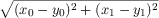
that is, the distance of (x0 - y0,x1 - y1) to the origin.The midpoint between points (x0,y0) and (x1,y1) is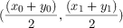
that is, its coordinates are the midpoints between each pair of coordinates, respectively.
Now that we have all the auxiliary functions, it is time to return to the problem of combining the three images that are created by the recursive calls. One obvious guess is to use the overlay or underlay function, but a test at in the interaction area of DrRacket shows that the functions hide the underlying triangles.
> scene1 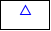
> scene2 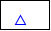
> scene3
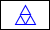
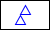
; Image Posn Posn Posn -> Image ; generative adds the triangle (a, b, c) to s, subdivides the triangle ; into three by taking the midpoints of its sides, and deals ; with the outer triangles recursively until it is too small ; accumulator the function accumulates the triangles in the given scene (define (add-sierpinski scene0 a b c) (cond [(too-small? a b c) scene0] [else (local ((define scene1 (add-triangle scene0 a b c)) (define mid-a-b (mid-point a b)) (define mid-b-c (mid-point b c)) (define mid-c-a (mid-point c a)) (define scene2 (add-sierpinski scene1 a mid-a-b mid-c-a)) (define scene3 (add-sierpinski scene2 b mid-b-c mid-a-b))) (add-sierpinski scene3 c mid-c-a mid-b-c))]))
Figure 114 shows the reformulation based on this insight. The three highlights pinpoint the key design idea. All concern the case when the triangle is sufficiently large and it is added to the given scene. Once its sides are sub-divided, the first outer triangle is recursively processed using scene1, the result of adding the given triangle. Similarly, the result of this first recursion, dubbed scene2, is used for the second recursion, which is about processing the second triangle. Finally, scene3 flows into the third recursive call. In sum, the novelty is that the accumulator is simultaneously an argument, a medium for collecting knowledge, and the result of the function.
(define MT (empty-scene 400 400)) (define A (make-posn 200 50)) (define B (make-posn 27 350)) (define C (make-posn 373 350))
Exercise 433. To compute the endpoints of an equilateral Sierpinski triangle, draw a circle and pick three points on the circle that are 120 degrees apart, for example, 120, 240, and 360.
Design the function circle-pt:
(define CENTER (make-posn 200 200)) (define RADIUS 200) ; Number -> Posn ; determines the point on the circle with CENTER and ; RADIUS whose angle is ; examples ; given: 120/360, what are the x and y coordinates of the desired point ; given: 240/360, what are the x and y coordinates of the desired point ; given: 360/360, what are the x and y coordinates of the desired point (define (circle-pt factor) (make-posn 0 0)) Domain Knowledge This design problem calls on knowledge from mathematics. One way to view the problem is as a conversion of a complex number from the polar-coordinate representation to the Posn representation. Read up on make-polar, real-part, and imag-part in ISL+. Another way is to use trigonometry, sin and cos, to determine the coordinates. If you choose this route, recall that these trigonometry functions compute the sine and cosine in terms of radians, not degrees. Also keep in mind that on-screen positions grow downwards not upwards.
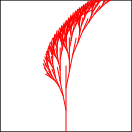 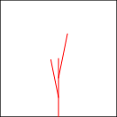
They demonstrate how to generate a fractal Savannah tree in the same way that figure 84 shows how to draw a Sierpinski triangle. The image on the left shows what a fractal Savannah tree looks like. The right one explains the generative construction step.Design the function add-savannah. The function consumes an image and four numbers: (1) the x coordinate of a line’s base point, (2) the y coordinate of a line’s base point, (3) the length of the line, and (4) the angle of the line. It adds a fractal Savannah tree to the given image.
Unless the line is too short, the function adds the specified line to the image. It then divides the line into three segments. It recursively uses the two intermediate points as the new starting points for two lines. The lengths and the angles of the two branches change in a fixed manner, but independently of each other. Use constants to define these changes and work with them until you like your tree well enough.
Hint Experiment with shortening the left branches by at least one third and rotating it left by at least 0.15 degrees. For the right branch, shorten it by at least 20% and rotate it by 0.2 degrees in the opposite direction.
Exercise 435. Graphics programmers often need to connect two points with a smooth curve where “smooth” is relative to some perspective. Take a look at these two images: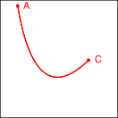 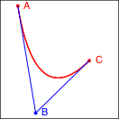
The left one shows a smooth curve, connecting points A and C; the right one supplies the perspective point, B, and the angle that an observer would have from this point.One method for drawing such curves is due to Bézier.Dr. Géraldine Morin suggested this exercise. It is a prime example of generative recursion, and the following sequence explains the eureka! behind the algorithm: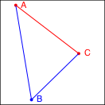 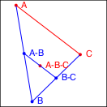 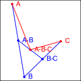
Consider the image on the left. It reminds you that the three given points determine a triangle and that the connection between A to C is the focal point of the algorithm. The goal is to pull the line from A to C toward B so that it turns into a smooth curve.Now turn to the image in the middle It explains the essential idea of the generative step. The algorithm determines the midpoint on the two observer lines, A-B and B-C, as well as the midpoint between these two, A-B-C.
Finally, the rightmost image shows how these three new points generate two distinct recursive calls: one deals with the new triangle on the left and the other one with the triangle on the right. More precisely, A-B and B-C become the new observer points and the lines from A to A-B-C and from C to A-B-C become the foci of the two recursive calls.
When the triangle is small enough, we have a trivially solvable case. The algorithm just draws the triangle, and it appears as a point on the given image. You may need to experiment with the notion of “small enough” to make the curve look smooth.
39 Summary
The first step is to recognize the need for introducing an accumulator. Traversals “forget” pieces of the argument when they step from piece to the next. If you discover that such knowledge could simplify the function’s design, consider introducing an accumulator. The first step is to switch to the accumulator template.
The second, and key, step is to formulate an accumulator statement. Concisely put, the statement must express what knowledge the accumulator gathers using what kind of data. Don’t proceed until you have answered these questions. In most cases, the accumulator statement describes the relevant difference between the very original argument and the current argument.
The third step, a minor one, is to deduce from the accumulator statement (1) what the initial accumulator value is, (2) how to maintain it during traversal steps, and (3) how to exploit its knowledge.
The idea of accumulating knowledge is ubiquitous, and it appears in many different forms and shapes. It is widely used in so-called functional languages like ISL+. Programmers using imperative languages encounter accumulators in a different way, mostly via assignment statements in primitive looping constructs, because the latter cannot return values. Designing such imperative accumulator programs proceeds just like the design of accumulator functions here, but the details are beyond the scope of this first book on systematic program design.